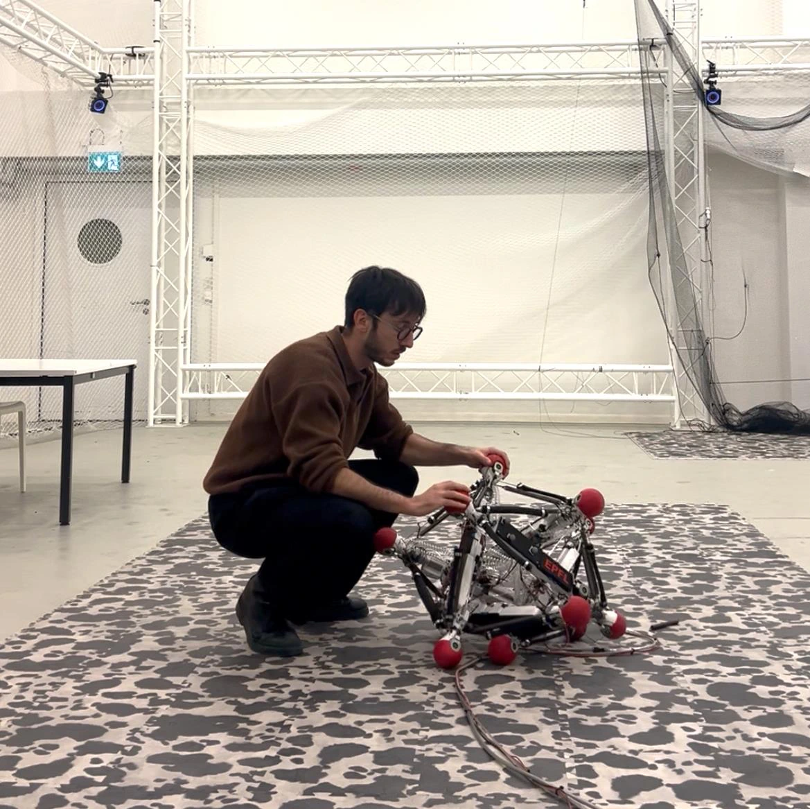
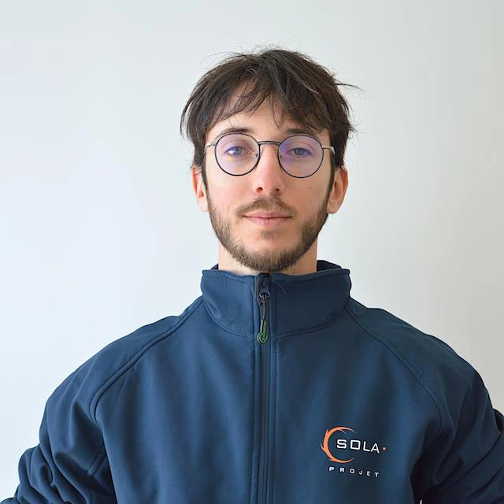
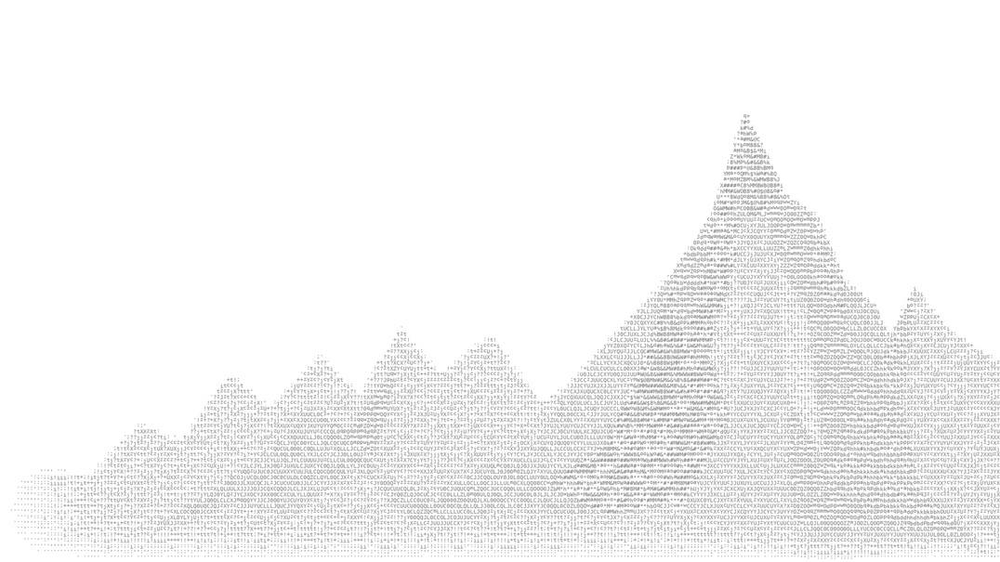
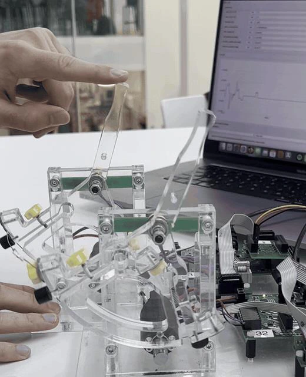
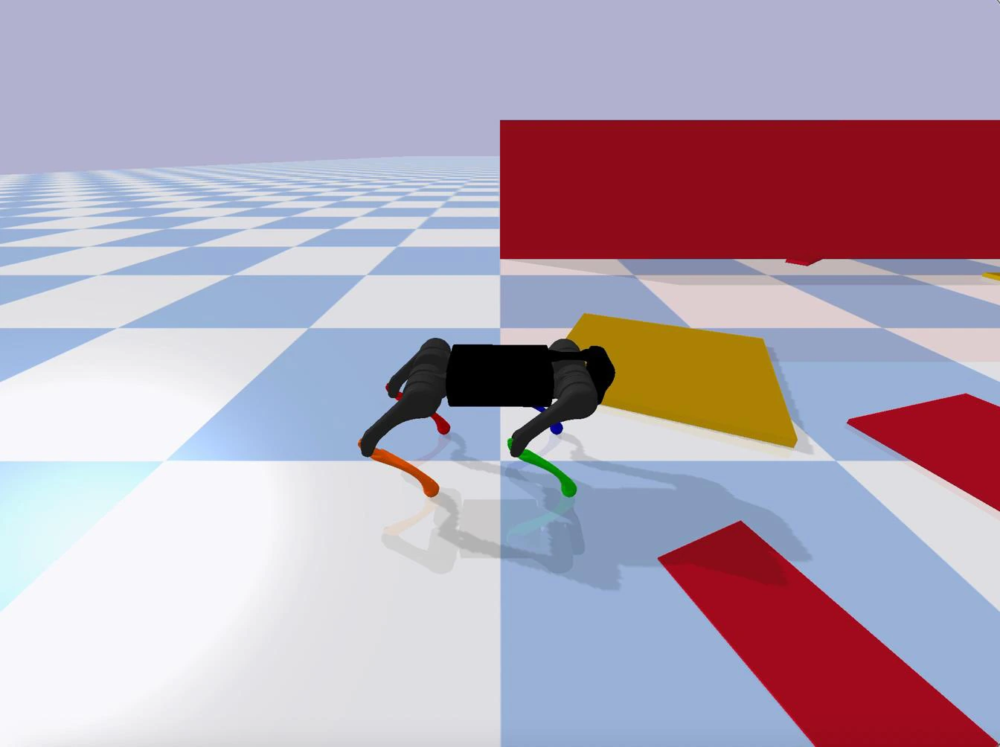
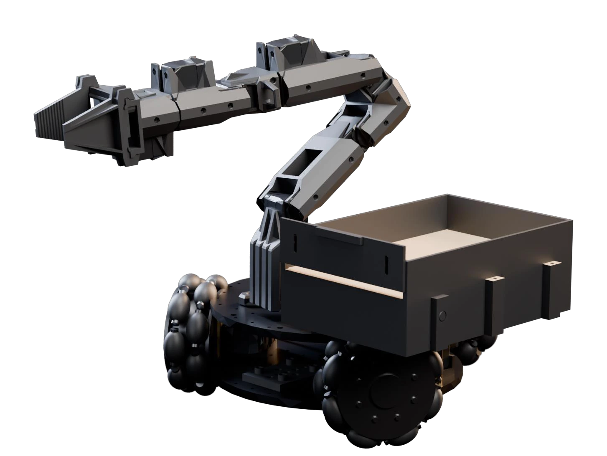
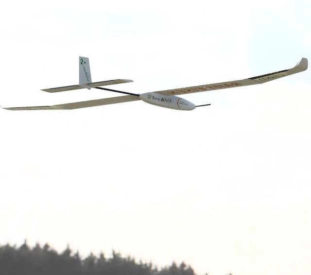

LIS · EPFLROBOTIQUE · RECHERCHE
Tensegrity
Apprendre à un robot souple à se déplacer.
De la simulation au robot réel : apprentissage par renforcement pour la locomotion et le suivi de vitesse.
Découvrir le projetROBOTIQUE & SYSTÈMES AUTONOMES
Apprendre aux robots.
Donner vie aux idées.
MSc Robotics à l’EPFL. J’explore le lien entre
intelligence, contrôle et monde physique.


UNE SÉLECTION DE PROJETS · 2020–2026
De l’apprentissage par renforcement au vol solaire, chaque projet est une façon de comprendre, de construire et d’aller plus loin.

LIS · EPFLROBOTIQUE · RECHERCHE
Apprendre à un robot souple à se déplacer.
De la simulation au robot réel : apprentissage par renforcement pour la locomotion et le suivi de vitesse.
Découvrir le projet
10,2 ms · latenceCONTRÔLE & INTERACTION
Deux interfaces, un même sens du toucher.
Découvrir le projet
EPFL · Legged RoboticsLOCOMOTION & SIMULATION
Marcher, trotter, apprendre à sauter.
Découvrir le projet
1er prix · Hackathon 2026ROBOTIQUE MOBILE · PROJET D’ÉQUIPE
Trois jours pour donner vie à un robot.
Découvrir le projet
2020–2026 · Founder & LeadAÉROSPATIAL & INGÉNIERIE SYSTÈME
L’énergie du soleil. L’ambition de voler loin.
Découvrir le projetLOGICIEL & INTELLIGENCE ARTIFICIELLE
Planifier. Évaluer. Améliorer.
Des moteurs de planification récursive et une boucle d’évaluation pour améliorer la qualité des plans.
Découvrir le projetUN PEU PLUS SUR MOI
Comprendre un système. Imaginer ce qu’il pourrait faire. Puis le construire.
En dernière année de MSc Robotics à l’EPFL, je travaille sur l’apprentissage par renforcement et le contrôle de robots physiques. J’aime faire dialoguer les algorithmes, l’électronique et la mécanique pour passer d’une idée à un système qui fonctionne.
En dehors du laboratoire, vous me trouverez en randonnée, sur une voie d’escalade, ou plongé dans la philosophie et les arts.
Python · C/C++ · MATLAB
JAX · PyTorch · NumPy
Git · GitHub
ROS 2 · MuJoCo · Gazebo · PyBullet
Contrôle & estimation d’état
Apprentissage par renforcement
Fusion 360 · CATIA · KiCad
Systèmes embarqués
Prototypage & composites
PARCOURS & FORMATION
De la microtechnique à la robotique, avec une même envie de relier les disciplines.
EPFL
Spécialisation en robotique
EPFL
Fondations en ingénierie & systèmes
ESA ACADEMY
Formation à la durabilité spatiale · Belgique
UNE IDÉE, UN PROJET, UNE RENCONTRE ?
Robotique, recherche ou nouvelle aventure.
Tout commence par une conversation.
